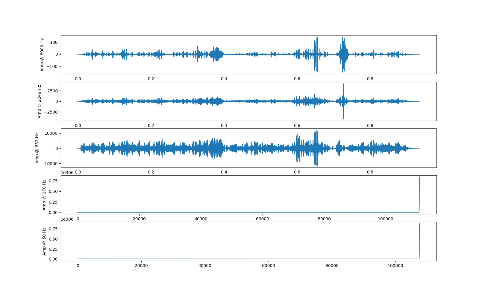

audiosegment module¶
This module simply exposes a wrapper of a pydub.AudioSegment object.
-
class
audiosegment.AudioSegment(pydubseg, name)[source]¶ Bases:
objectThis class is a wrapper for a pydub.AudioSegment that provides additional methods.
-
auditory_scene_analysis(debug=False, debugplot=False)[source]¶ Algorithm based on paper: Auditory Segmentation Based on Onset and Offset Analysis, by Hu and Wang, 2007.
Returns a list of AudioSegments, each of which is all the sound during this AudioSegment’s duration from a particular source. That is, if there are several overlapping sounds in this AudioSegment, this method will return one AudioSegment object for each of those sounds. At least, that’s the idea.
Current version is very much in alpha, and while it shows promise, will require quite a bit more tuning before it can really claim to work.
Parameters: - debug – If True will print out debug outputs along the way. Useful if you want to see why it is taking so long.
- debugplot – If True will use Matplotlib to plot the resulting spectrogram masks in Mel frequency scale.
Returns: List of AudioSegment objects, each of which is from a particular sound source.
-
detect_event(model, ms_per_input, transition_matrix, model_stats, event_length_s, start_as_yes=False, prob_raw_yes=0.5)[source]¶ A list of tuples of the form [(‘n’, AudioSegment), (‘y’, AudioSegment), etc.] is returned, where tuples of the form (‘n’, AudioSegment) are the segments of sound where the event was not detected, while (‘y’, AudioSegment) tuples were the segments of sound where the event was detected.
# Example usage import audiosegment import keras import keras.models import numpy as np import sys class Model: def __init__(self, modelpath): self.model = keras.models.load_model(modelpath) def predict(self, seg): _bins, fft_vals = seg.fft() fft_vals = np.abs(fft_vals) / len(fft_vals) predicted_np_form = self.model.predict(np.array([fft_vals]), batch_size=1) prediction_as_int = int(round(predicted_np_form[0][0])) return prediction_as_int modelpath = sys.argv[1] wavpath = sys.argv[2] model = Model(modelpath) seg = audiosegment.from_file(wavpath).resample(sample_rate_Hz=32000, sample_width=2, channels=1) pyes_to_no = 0.3 # The probability of one 30 ms sample being an event, and the next one not pno_to_yes = 0.2 # The probability of one 30 ms sample not being an event, and the next one yes ptrue_pos_rate = 0.8 # The true positive rate (probability of a predicted yes being right) pfalse_neg_rate = 0.3 # The false negative rate (probability of a predicted no being wrong) raw_prob = 0.7 # The raw probability of seeing the event in any random 30 ms slice of this file events = seg.detect_event(model, ms_per_input=30, transition_matrix=[pyes_to_no, pno_to_yes], model_stats=[ptrue_pos_rate, pfalse_neg_rate], event_length_s=0.25, prob_raw_yes=raw_prob) nos = [event[1] for event in events if event[0] == 'n'] yeses = [event[1] for event in events if event[0] == 'y'] if len(nos) > 1: notdetected = nos[0].reduce(nos[1:]) notdetected.export("notdetected.wav", format="WAV") if len(yeses) > 1: detected = yeses[0].reduce(yeses[1:]) detected.export("detected.wav", format="WAV")
Parameters: - model – The model. The model must have a predict() function which takes an AudioSegment of ms_per_input number of ms and which outputs 1 if the audio event is detected in that input, and 0 if not. Make sure to resample the AudioSegment to the right values before calling this function on it.
- ms_per_input – The number of ms of AudioSegment to be fed into the model at a time. If this does not come out even, the last AudioSegment will be zero-padded.
- transition_matrix – An iterable of the form: [p(yes->no), p(no->yes)]. That is, the probability of moving from a ‘yes’ state to a ‘no’ state and the probability of vice versa.
- model_stats – An iterable of the form: [p(reality=1|output=1), p(reality=1|output=0)]. That is, the probability of the ground truth really being a 1, given that the model output a 1, and the probability of the ground truth being a 1, given that the model output a 0.
- event_length_s – The typical duration of the event you are looking for in seconds (can be a float).
- start_as_yes – If True, the first ms_per_input will be in the ‘y’ category. Otherwise it will be in the ‘n’ category.
- prob_raw_yes – The raw probability of finding the event in any given ms_per_input vector.
Returns: A list of tuples of the form [(‘n’, AudioSegment), (‘y’, AudioSegment), etc.], where over the course of the list, the AudioSegment in tuple 3 picks up where the one in tuple 2 left off.
Raises: ValueError if ms_per_input is negative or larger than the number of ms in this AudioSegment; if transition_matrix or model_stats do not have a __len__ attribute or are not length 2; if the values in transition_matrix or model_stats are not in the closed interval [0.0, 1.0].
-
detect_voice(prob_detect_voice=0.5)[source]¶ Returns self as a list of tuples: [(‘v’, voiced segment), (‘u’, unvoiced segment), (etc.)]
The overall order of the AudioSegment is preserved.
Parameters: prob_detect_voice – The raw probability that any random 20ms window of the audio file contains voice. Returns: The described list.
-
dice(seconds, zero_pad=False)[source]¶ Cuts the AudioSegment into seconds segments (at most). So for example, if seconds=10, this will return a list of AudioSegments, in order, where each one is at most 10 seconds long. If zero_pad is True, the last item AudioSegment object will be zero padded to result in seconds seconds.
Parameters: - seconds – The length of each segment in seconds. Can be either a float/int, in which case self.duration_seconds / seconds are made, each of seconds length, or a list-like can be given, in which case the given list must sum to self.duration_seconds and each segment is specified by the list - e.g. the 9th AudioSegment in the returned list will be seconds[8] seconds long.
- zero_pad – Whether to zero_pad the final segment if necessary. Ignored if seconds is a list-like.
Returns: A list of AudioSegments, each of which is the appropriate number of seconds long.
Raises: ValueError if a list-like is given for seconds and the list’s durations do not sum to self.duration_seconds.
-
fft(start_s=None, duration_s=None, start_sample=None, num_samples=None, zero_pad=False)[source]¶ Transforms the indicated slice of the AudioSegment into the frequency domain and returns the bins and the values.
If neither start_s or start_sample is specified, the first sample of the slice will be the first sample of the AudioSegment.
If neither duration_s or num_samples is specified, the slice will be from the specified start to the end of the segment.
# Example for plotting the FFT using this function import matplotlib.pyplot as plt import numpy as np seg = audiosegment.from_file("furelise.wav") # Just take the first 3 seconds hist_bins, hist_vals = seg[1:3000].fft() hist_vals_real_normed = np.abs(hist_vals) / len(hist_vals) plt.plot(hist_bins / 1000, hist_vals_real_normed) plt.xlabel("kHz") plt.ylabel("dB") plt.show()

Parameters: - start_s – The start time in seconds. If this is specified, you cannot specify start_sample.
- duration_s – The duration of the slice in seconds. If this is specified, you cannot specify num_samples.
- start_sample – The zero-based index of the first sample to include in the slice. If this is specified, you cannot specify start_s.
- num_samples – The number of samples to include in the slice. If this is specified, you cannot specify duration_s.
- zero_pad – If True and the combination of start and duration result in running off the end of the AudioSegment, the end is zero padded to prevent this.
Returns: np.ndarray of frequencies, np.ndarray of amount of each frequency
Raises: ValueError If start_s and start_sample are both specified and/or if both duration_s and num_samples are specified.
-
filter_bank(lower_bound_hz=50, upper_bound_hz=8000.0, nfilters=128, mode='mel')[source]¶ Returns a numpy array of shape (nfilters, nsamples), where each row of data is the result of bandpass filtering the audiosegment around a particular frequency. The frequencies are spaced from lower_bound_hz to upper_bound_hz and are returned with the np array. The particular spacing of the frequencies depends on mode, which can be either: ‘linear’, ‘mel’, or ‘log’.
Note
This method is an approximation of a gammatone filterbank until I get around to writing an actual gammatone filterbank function.
# Example usage import audiosegment import matplotlib.pyplot as plt import numpy as np def visualize(spect, frequencies, title=""): # Visualize the result of calling seg.filter_bank() for any number of filters i = 0 for freq, (index, row) in zip(frequencies[::-1], enumerate(spect[::-1, :])): plt.subplot(spect.shape[0], 1, index + 1) if i == 0: plt.title(title) i += 1 plt.ylabel("{0:.0f}".format(freq)) plt.plot(row) plt.show() seg = audiosegment.from_file("some_audio.wav").resample(sample_rate_Hz=24000, sample_width=2, channels=1) spec, frequencies = seg.filter_bank(nfilters=5) visualize(spec, frequencies)
Parameters: - lower_bound_hz – The lower bound of the frequencies to use in the bandpass filters.
- upper_bound_hz – The upper bound of the frequencies to use in the bandpass filters.
- nfilters – The number of filters to apply. This will determine which frequencies are used as well, as they are interpolated between lower_bound_hz and upper_bound_hz based on mode.
- mode – The way the frequencies are spaced. Options are: linear, in which case the frequencies are linearly interpolated between lower_bound_hz and upper_bound_hz, mel, in which case the mel frequencies are used, or log, in which case they are log-10 spaced.
Returns: A numpy array of the form (nfilters, nsamples), where each row is the audiosegment, bandpass-filtered around a particular frequency, and the list of frequencies. I.e., returns (spec, freqs).
-
filter_silence(duration_s=1, threshold_percentage=1, console_output=False)[source]¶ Returns a copy of this AudioSegment, but whose silence has been removed.
Note
This method requires that you have the program ‘sox’ installed.
Warning
This method uses the program ‘sox’ to perform the task. While this is very fast for a single function call, the IO may add up for large numbers of AudioSegment objects.
Parameters: - duration_s – The number of seconds of “silence” that must be present in a row to be stripped.
- threshold_percentage – Silence is defined as any samples whose absolute value is below threshold_percentage * max(abs(samples in this segment)).
- console_output – If True, will pipe all sox output to the console.
Returns: A copy of this AudioSegment, but whose silence has been removed.
-
generate_frames(frame_duration_ms, zero_pad=True)[source]¶ Yields self’s data in chunks of frame_duration_ms.
This function adapted from pywebrtc’s example [https://github.com/wiseman/py-webrtcvad/blob/master/example.py].
Parameters: - frame_duration_ms – The length of each frame in ms.
- zero_pad – Whether or not to zero pad the end of the AudioSegment object to get all the audio data out as frames. If not, there may be a part at the end of the Segment that is cut off (the part will be <= frame_duration_ms in length).
Returns: A Frame object with properties ‘bytes (the data)’, ‘timestamp (start time)’, and ‘duration’.
-
generate_frames_as_segments(frame_duration_ms, zero_pad=True)[source]¶ Does the same thing as generate_frames, but yields tuples of (AudioSegment, timestamp) instead of Frames.
-
normalize_spl_by_average(db)[source]¶ Normalize the values in the AudioSegment so that its average dB value is db.
The dB of a value is calculated as 20 * log10(abs(value + 1E-9)).
Parameters: db – The decibels to normalize average to. Returns: A new AudioSegment object whose values are changed so that their average is db.
-
reduce(others)[source]¶ Reduces others into this one by concatenating all the others onto this one and returning the result. Does not modify self, instead, makes a copy and returns that.
Parameters: others – The other AudioSegment objects to append to this one. Returns: The concatenated result.
-
resample(sample_rate_Hz=None, sample_width=None, channels=None, console_output=False)[source]¶ Returns a new AudioSegment whose data is the same as this one, but which has been resampled to the specified characteristics. Any parameter left None will be unchanged.
Note
This method requires that you have the program ‘sox’ installed.
Warning
This method uses the program ‘sox’ to perform the task. While this is very fast for a single function call, the IO may add up for large numbers of AudioSegment objects.
Parameters: - sample_rate_Hz – The new sample rate in Hz.
- sample_width – The new sample width in bytes, so sample_width=2 would correspond to 16 bit (2 byte) width.
- channels – The new number of channels.
- console_output – Will print the output of sox to the console if True.
Returns: The newly sampled AudioSegment.
-
spectrogram(start_s=None, duration_s=None, start_sample=None, num_samples=None, window_length_s=None, window_length_samples=None, overlap=0.5)[source]¶ Does a series of FFTs from start_s or start_sample for duration_s or num_samples. Effectively, transforms a slice of the AudioSegment into the frequency domain across different time bins.
# Example for plotting a spectrogram using this function import audiosegment import matplotlib.pyplot as plt #... seg = audiosegment.from_file("somebodytalking.wav") freqs, times, amplitudes = seg.spectrogram(window_length_s=0.03, overlap=0.5) amplitudes = 10 * np.log10(amplitudes + 1e-9) # Plot plt.pcolormesh(times, freqs, amplitudes) plt.xlabel("Time in Seconds") plt.ylabel("Frequency in Hz") plt.show()

Parameters: - start_s – The start time. Starts at the beginning if neither this nor start_sample is specified.
- duration_s – The duration of the spectrogram in seconds. Goes to the end if neither this nor num_samples is specified.
- start_sample – The index of the first sample to use. Starts at the beginning if neither this nor start_s is specified.
- num_samples – The number of samples in the spectrogram. Goes to the end if neither this nor duration_s is specified.
- window_length_s – The length of each FFT in seconds. If the total number of samples in the spectrogram is not a multiple of the window length in samples, the last window will be zero-padded.
- window_length_samples – The length of each FFT in number of samples. If the total number of samples in the spectrogram is not a multiple of the window length in samples, the last window will be zero-padded.
- overlap – The fraction of each window to overlap.
Returns: Three np.ndarrays: The frequency values in Hz (the y-axis in a spectrogram), the time values starting at start time and then increasing by duration_s each step (the x-axis in a spectrogram), and the dB of each time/frequency bin as a 2D array of shape [len(frequency values), len(duration)].
Raises: ValueError – If start_s and start_sample are both specified, if duration_s and num_samples are both specified, if the first window’s duration plus start time lead to running off the end of the AudioSegment, or if window_length_s and window_length_samples are either both specified or if they are both not specified.
-
spl¶ Sound Pressure Level - defined as 20 * log10(abs(value)).
Returns a numpy array of SPL dB values.
-
to_numpy_array()[source]¶ Convenience function for np.array(self.get_array_of_samples()) while keeping the appropriate dtype.
-
zero_extend(duration_s=None, num_samples=None)[source]¶ Adds a number of zeros (digital silence) to the AudioSegment (returning a new one).
Parameters: - duration_s – The number of seconds of zeros to add. If this is specified, num_samples must be None.
- num_samples – The number of zeros to add. If this is specified, duration_s must be None.
Returns: A new AudioSegment object that has been zero extended.
Raises: ValueError if duration_s and num_samples are both specified.
-
-
audiosegment.deserialize(bstr)[source]¶ Attempts to deserialize a bytestring into an audiosegment.
Parameters: bstr – The bytestring serialized via an audiosegment’s serialize() method. Returns: An AudioSegment object deserialized from bstr.
-
audiosegment.empty()[source]¶ Creates a zero-duration AudioSegment object.
Returns: An empty AudioSegment object.
-
audiosegment.from_file(path)[source]¶ Returns an AudioSegment object from the given file based on its file extension. If the extension is wrong, this will throw some sort of error.
Parameters: path – The path to the file, including the file extension. Returns: An AudioSegment instance from the file.
-
audiosegment.from_mono_audiosegments(*args)[source]¶ Creates a multi-channel AudioSegment out of multiple mono AudioSegments (two or more). Each mono AudioSegment passed in should be exactly the same number of samples.
Returns: An AudioSegment of multiple channels formed from the given mono AudioSegments.
-
audiosegment.from_numpy_array(nparr, framerate)[source]¶ Returns an AudioSegment created from the given numpy array.
The numpy array must have shape = (num_samples, num_channels).
Parameters: nparr – The numpy array to create an AudioSegment from. Returns: An AudioSegment created from the given array.
-
audiosegment.silent(duration=1000, frame_rate=11025)[source]¶ Creates an AudioSegment object of the specified duration/frame_rate filled with digital silence.
Parameters: - duration – The duration of the returned object in ms.
- frame_rate – The samples per second of the returned object.
Returns: AudioSegment object filled with pure digital silence.